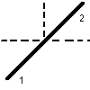

Lame semi-réfléchissante

Définition
Elle est défini par les points 1 et 2.
La lame peut être ajoutée:
- en cliquant sur le bouton de la barre d'outil ayant la forme ci-dessus,
puis en faisant un clic simple pour saisir le premier point, puis en faisant
un clic simple pour saisir le second (ne pas maintenir le bouton de la
souris enfoncé entre les deux points)
OU
- menu "Ajouter" puis "Système optique idéal" puis "Lame
semi-réfléchissante".
Options
On peut imposer
-l'épaisseur et la couleur du trait représentant la lame
à l'écran
Ces propriétés peuvent être rendues accessibles:
- à la construction du miroir si on passe par le menu "Ajouter"
- à tout instant en cliquant sur le bouton "Propriétés"
de la barre d'outil, puis en cliquant sur un des cercles bleus qui apparaissent
sur l'élément dont on veut obtenir les propriétés;
ne pas oublier à la fin de cliquer sur le bouton "Fin prop." de
la barre d'outil pour quitter le mode propriétés.
Remarques importantes
1) Lorsqu'un rayon lumineux arrivesur cette lame, il donne naissance à
un rayon réfléchi et à un rayon transmis. Dans la terminologie
utilisée dans ce logiciel, le rayon transmis est appelé "rayon
enfant" (comportement contraire aux autres éléments réfractants,
pour lesquels le rayon enfant est le rayon réfléchi). Pour
une source ponctuelle, une onde
plane, ou un rayon unique, le nombre maximal
de rayons enfants est imposé (voir les propriétés de
ces éléments).
2) La lame est idéale en ce sens qu'elle est infiniment mince:
il n'y a pas de décalage latéral entre le rayon incident et
le rayon transmis.
Divers
On peut demander que la normale au miroir soit tracée à
chaque point d'intersection d'un rayon lumineux avec cette lame:
- menu "Options", vérifier que "Afficher les normales" est coché
OU
- dans la barre d'outil, boite à cocher "Normales"
On peut aussi demander que les angles d'incidence soient affichés
(en °):
- menu "Options", vérifier que "Afficher les angles" est coché
OU
- dans la barre d'outil, boite à cocher "Angles d'incidence et
de réfraction"
L'angle de réflexion n'est pas affiché, afin de ne pas
surcharger les représentations.
Le nombre de décimales sur les angles est fixé dans
la boite de dialogue des options des normales: menu "Options" puis "Options
des normales"
Retour à la page
d'accueil